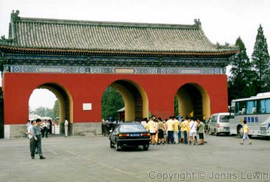

China, Beijing, Temple Of Heaven, 2001-08
|
As I was
here a few years earlier, I'm writing some other comments about this city
now.  Judging by the look of the entrance to the Temple of Heaven, I can
clearly see that this must have belonged to the Emperor. From where this picture was shot, only the emperor could walk. The mid
"stripe" of marmor was reserved only for him. The rest of the people had to
use the other ports. One day, you are invited to sit on the outside of this path. This day,
the center port is open. You feel the excitement rising for this special
occasion. You have the feeling in your stomach, just like your first day of
school, when you also knew something big was going to happen. And today, hundreds of tourists are waking on the path that was reserved
for the Emperor. |